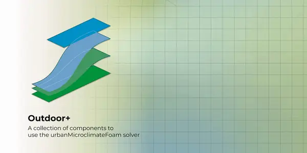
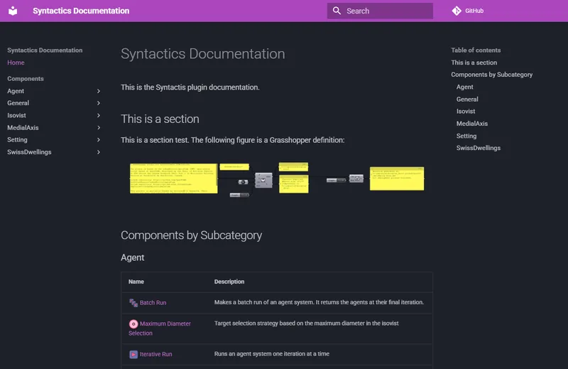

Grasshopper plugin development / C#
Development of a Grasshopper plugin for urban microclimate simulations integrating the urbanMicroclimateFoam solver for CFD analysis.
View Project
Grasshopper plugin development / C#
DocsHopper is a utility plugin that extracts component metadata directly from your loaded Grasshopper assemblies and generates static documentation websites.
View Project